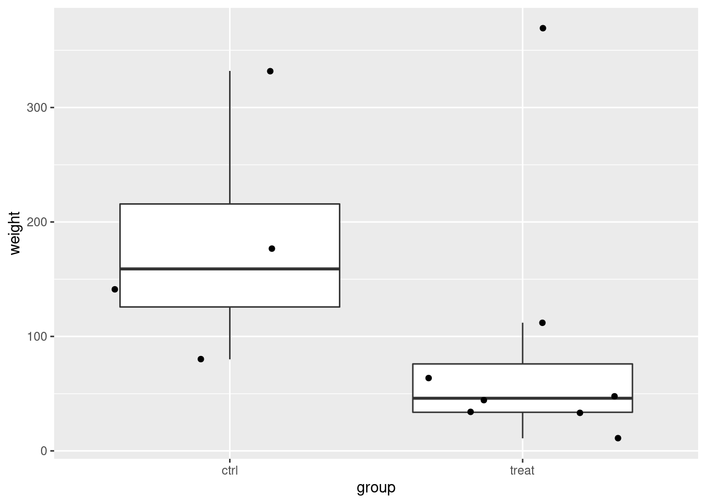
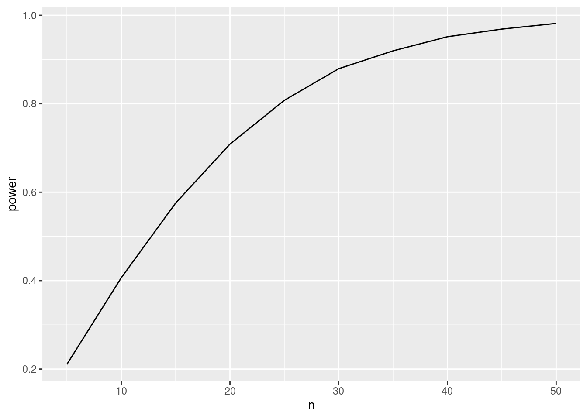
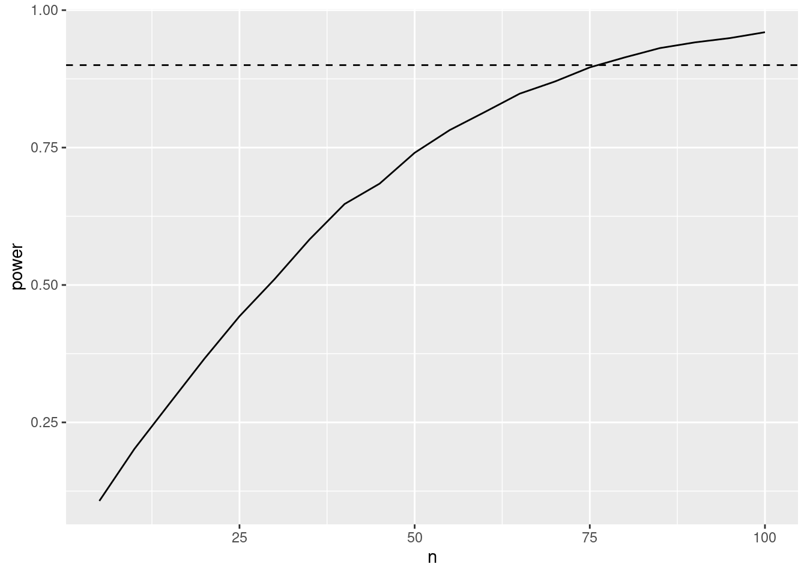

## ── Attaching packages ─────────────────────────────────────── tidyverse 1.3.1 ──
## ✔ ggplot2 3.3.5 ✔ purrr 0.3.4
## ✔ tibble 3.1.4 ✔ dplyr 1.0.7
## ✔ tidyr 1.1.3 ✔ stringr 1.4.0
## ✔ readr 1.4.0 ✔ forcats 0.5.1
## ── Conflicts ────────────────────────────────────────── tidyverse_conflicts() ──
## ✖ dplyr::filter() masks stats::filter()
## ✖ dplyr::lag() masks stats::lag()
Power
The power of a test is defined as:
\[P(p <
\alpha | H_1)\] This is the probability to reject the
nulhypothesis at the significance level \(\alpha\) given that the alternative
hypothesis is true.
The power depends on:
- the real effect size in the population \(\mathbf{L}^T\boldsymbol{\beta}\).
- the number of observations: SE and df.
- Choice of designpoints
- Choice of significance-level \(\alpha\).
We will evaluate the power using simulation.
Rodents
A biologist examined the effect of a fungal infection on the eating
behavior of rodents. Infected apples were offered to a group of eight
rodents, and sterile apples were offered to a group of 4 rodents. The
amount of grams of apples consumed per kg body weight are given in the
dataset below.
rodents <- data.frame(weight=c(11,33,48,34,112,369,64,44,177,80,141,332),group=as.factor(c(rep("treat",8),rep("ctrl",4))))
rodents
Data exploratie
rodents %>%
ggplot(aes(x=group,y=weight)) +
geom_boxplot(outlier.shape = NA) +
geom_jitter()

rodents %>%
ggplot(aes(sample = weight)) +
geom_qq() +
geom_qq_line() +
facet_wrap(~ group)

In the data exploration we do not have enough data to evaluate the
assumptions.
Suppose that the assumptions are valid and that standard deviation in
the population would be equal to the ones you observed in the
experiment.
- What is the power of the experiment if the effect size and standard
deviation in the population would be equal to the ones you observed in
the experiment
- What would the power by if number of rodents would balanced in both
groups
- How many observations would you need to pick up the treatment effect
with a power of 80%?
- How many observations would you need to pick up the treatment effect
of 60 g/kg with a power of 80%?
Analyse of the
data
We will model the data using a linear model with one dummy
variable.
\[
y_i = \beta_0 + \beta_1 x_{t,i} +
\epsilon_i
\] with \(x_{p,i} = 0\) if the
rodent is subjected the control treatment with sterile apples and \(x_{t,i} = 1\) if rodent receives the
treatment with infected apples.
The average difference amount of apples eaten in g/kg body weight
between infected and sterile apples is:
\[
\hat \beta_1 = \bar y_t - \bar y_c
\]
- \(H_0\): rodents eat consume on
average the same amount of apples per kg body weight when they are fed
with sterile or with infected apples.
- \(H_1\): the average amount of
apples in g/kg body weight is different when rodents are fed with
sterile then as when they are fed with infected apples.
lm1 <- lm(weight ~ group, rodents)
summary(lm1)
##
## Call:
## lm(formula = weight ~ group, data = rodents)
##
## Residuals:
## Min 1Q Median 3Q Max
## -102.500 -55.625 -41.438 1.531 279.625
##
## Coefficients:
## Estimate Std. Error t value Pr(>|t|)
## (Intercept) 182.50 57.03 3.200 0.00949 **
## grouptreat -93.12 69.85 -1.333 0.21204
## ---
## Signif. codes: 0 '***' 0.001 '**' 0.01 '*' 0.05 '.' 0.1 ' ' 1
##
## Residual standard error: 114.1 on 10 degrees of freedom
## Multiple R-squared: 0.1509, Adjusted R-squared: 0.06601
## F-statistic: 1.777 on 1 and 10 DF, p-value: 0.212
With the current study and under when we assume that the assumptions
of the model hold, we conclude that the amount of apples that rodents on
average consume does not differ significantly between the group that was
fed with sterile apples and the group that was fed with infected
apples.
Power of the test to
detect the same effect size as observed in our dataset with our
experimental design?
Simulation
function
Function to simulate data similar to that of our experiment under our
model assumptions.
simFast <- function(form, data, betas, sd, contrasts, alpha = .05, nSim = 10000)
{
ySim <- rnorm(nrow(data)*nSim,sd=sd)
dim(ySim) <-c(nrow(data),nSim)
design <- model.matrix(form, data)
ySim <- ySim + c(design %*%betas)
ySim <- t(ySim)
### Fitting
fitAll <- limma::lmFit(ySim,design)
### Inference
varUnscaled <- c(t(contrasts)%*%fitAll$cov.coefficients%*%contrasts)
contrasts <- fitAll$coefficients %*%contrasts
seContrasts <- varUnscaled^.5*fitAll$sigma
tstats <- contrasts/seContrasts
pvals <- pt(abs(tstats),fitAll$df.residual,lower.tail = FALSE)*2
return(mean(pvals < alpha))
}
Simulation
betas <- lm1$coefficients
nSim <- 10000
form <- ~ group
sd <- sigma(lm1)
contrast <- limma::makeContrasts("grouptreat",levels = names(lm1$coefficients))
## Warning in limma::makeContrasts("grouptreat", levels = names(lm1$coefficients)):
## Renaming (Intercept) to Intercept
## Contrasts
## Levels grouptreat
## Intercept 0
## grouptreat 1
#contrast <- matrix(c(0,1),ncol=1)
#rownames(contrast) <- names(mod1$coefficients)
alpha <- 0.05
power <- simFast(form, rodents, betas, sd, contrasts = contrast, alpha = alpha, nSim = nSim)
power
## [1] 0.2239
We observe that the experiment is severly underpowered. We only have
a power of 22.4% to pick up the treatment effect.
Power for a balanced
design
betas <- lm1$coefficients
nSim <- 10000
form <- ~ group
sd <- sigma(lm1)
contrast <- limma::makeContrasts("grouptreat",levels = names(lm1$coefficients))
## Warning in limma::makeContrasts("grouptreat", levels = names(lm1$coefficients)):
## Renaming (Intercept) to Intercept
n1 <- n2 <- nrow(rodents)/2
predictorData <- data.frame(group = rep(c("ctrl","treat"),c(n1,n2)) %>% as.factor)
powerBalanced <- simFast(form, predictorData, betas, sd, contrasts = contrast, alpha = alpha, nSim = nSim)
powerBalanced
## [1] 0.2596
We observe that the power is larger for the balanced design. We could
also have known this from formula of the standard error from the
two-sample t-test.
\[
SE = \hat \sigma \sqrt{1/n1 + 1/n2}
\] Indeed,
sqrt(1/sum(rodents$group=="treat") + 1/sum(rodents$group=="ctrl"))
## [1] 0.6123724
## [1] 0.5773503
So the SE is larger when the design is not balanced.
Required sample size to
obtain a power of 90 %?
set.seed(1400)
betas <- lm1$coefficients
nSim <- 10000
form <- ~ group
sd <- sigma(lm1)
alpha <- 0.05
contrast <- limma::makeContrasts("grouptreat",levels = names(lm1$coefficients))
## Warning in limma::makeContrasts("grouptreat", levels = names(lm1$coefficients)):
## Renaming (Intercept) to Intercept
power <- data.frame(n=seq(5,50,5),power=NA)
for (i in 1:nrow(power))
{
n1 <- n2 <- power$n[i]
predictorData <- data.frame(group = rep(c("ctrl","treat"),c(n1,n2)) %>% as.factor)
power$power[i] <- simFast(form, predictorData, betas, sd, contrasts = contrast, alpha = alpha, nSim = nSim)
}
power
power %>%
ggplot(aes(x=n,y=power)) +
geom_line()

Through simulations we show that we need about 32-33 observations to
obtain a power of about 90%.
This is similar to what we would obtain with the close form formula
that can be applied for a two group design
power.t.test(delta = lm1$coef[2], sd = sigma(lm1),power=.9)
##
## Two-sample t test power calculation
##
## n = 32.52035
## delta = 93.125
## sd = 114.067
## sig.level = 0.05
## power = 0.9
## alternative = two.sided
##
## NOTE: n is number in *each* group
Impact of effect
size
Suppose that we would like to pick up an effect size of \(\beta_1 = 60 g/kg\). how many samples would
be required in each group to obtain a power of 90%? Note, that
- we do a two-sided test so the sign of the effect size is
arbitrary.
- the intercept in the power analysis is also arbitrary so we could
also set it at 0.
set.seed(1400)
betas <- c(0,60)
nSim <- 10000
form <- ~ group
sd <- sigma(lm1)
power2 <- data.frame(n=seq(5,100,5),power=NA)
alpha <- 0.05
contrast <- limma::makeContrasts("grouptreat",levels = names(lm1$coefficients))
## Warning in limma::makeContrasts("grouptreat", levels = names(lm1$coefficients)):
## Renaming (Intercept) to Intercept
for (i in 1:nrow(power2))
{
n1 <- n2 <- power2$n[i]
predictorData <- data.frame(group = rep(c("ctrl","treat"),c(n1,n2)) %>% as.factor)
power2$power[i] <- simFast(form, predictorData, betas, sd, contrasts = contrast, alpha = alpha, nSim = nSim)
}
power2
power2 %>%
ggplot(aes(x=n,y=power)) +
geom_line() +
geom_hline(yintercept = .9, lty=2)

We observe that we need between 75-80 observations to obtain a power
of 90%.
This is confirmed with the power functions for the two sample
t-test.
b1 = - 60
power = .9
power.t.test(d = b1, sd = sigma(lm1), type='two.sample',power = power)
##
## Two-sample t test power calculation
##
## n = 76.926
## delta = 60
## sd = 114.067
## sig.level = 0.05
## power = 0.9
## alternative = two.sided
##
## NOTE: n is number in *each* group
Note, that we would require a much larger sample size. This is
because the desired effect size that we would like to pick up is small
compared to the variability (standard deviation) in the population.
LS0tCnRpdGxlOiAiRXhwZXJpbWVudGFsIERlc2lnbiBJSTogcmVwbGljYXRpb24gYW5kIHBvd2VyIGV4ZXJjaXNlIDEiCmF1dGhvcjogIkxpZXZlbiBDbGVtZW50ICYgQWxleGFuZHJlIFNlZ2VycyIKZGF0ZTogInN0YXRPbWljcywgR2hlbnQgVW5pdmVyc2l0eSAoaHR0cHM6Ly9zdGF0b21pY3MuZ2l0aHViLmlvKSIKb3V0cHV0OgogIGh0bWxfZG9jdW1lbnQ6CiAgICBjb2RlX2Rvd25sb2FkOiB5ZXMKICAgIHRoZW1lOiBjb3NtbwogICAgdG9jOiB5ZXMKICAgIHRvY19mbG9hdDogeWVzCiAgICBoaWdobGlnaHQ6IHRhbmdvCiAgICBudW1iZXJfc2VjdGlvbnM6IHllcwogIHBkZl9kb2N1bWVudDoKICAgIHRvYzogdHJ1ZQogICAgbnVtYmVyX3NlY3Rpb25zOiB0cnVlCiAgICBsYXRleF9lbmdpbmU6IHhlbGF0ZXgKCiAgICAKLS0tCgoKPGEgcmVsPSJsaWNlbnNlIiBocmVmPSJodHRwczovL2NyZWF0aXZlY29tbW9ucy5vcmcvbGljZW5zZXMvYnktbmMtc2EvNC4wIj48aW1nIGFsdD0iQ3JlYXRpdmUgQ29tbW9ucyBMaWNlbnNlIiBzdHlsZT0iYm9yZGVyLXdpZHRoOjAiIHNyYz0iaHR0cHM6Ly9pLmNyZWF0aXZlY29tbW9ucy5vcmcvbC9ieS1uYy1zYS80LjAvODh4MzEucG5nIiAvPjwvYT4KCmBgYHtyfQpsaWJyYXJ5KHRpZHl2ZXJzZSkKYGBgCgojIFBvd2VyCgpUaGUgcG93ZXIgb2YgYSB0ZXN0IGlzIGRlZmluZWQgYXM6CgokJFAocCA8IApcYWxwaGEgfCBIXzEpJCQKVGhpcyBpcyB0aGUgcHJvYmFiaWxpdHkgdG8gcmVqZWN0IHRoZSBudWxoeXBvdGhlc2lzIGF0IHRoZSBzaWduaWZpY2FuY2UgbGV2ZWwgJFxhbHBoYSQgZ2l2ZW4gdGhhdCB0aGUgYWx0ZXJuYXRpdmUgaHlwb3RoZXNpcyBpcyB0cnVlLiAKClRoZSBwb3dlciBkZXBlbmRzIG9uOgoKLSB0aGUgcmVhbCBlZmZlY3Qgc2l6ZSBpbiB0aGUgcG9wdWxhdGlvbiAkXG1hdGhiZntMfV5UXGJvbGRzeW1ib2x7XGJldGF9JC4KLSB0aGUgbnVtYmVyIG9mIG9ic2VydmF0aW9uczogU0UgYW5kIGRmLgotIENob2ljZSBvZiBkZXNpZ25wb2ludHMgCi0gQ2hvaWNlIG9mIHNpZ25pZmljYW5jZS1sZXZlbCAkXGFscGhhJC4gCgpXZSB3aWxsIGV2YWx1YXRlIHRoZSBwb3dlciB1c2luZyBzaW11bGF0aW9uLgoKIyBSb2RlbnRzCgpBIGJpb2xvZ2lzdCBleGFtaW5lZCB0aGUgZWZmZWN0IG9mIGEgZnVuZ2FsIGluZmVjdGlvbiBvbiB0aGUgZWF0aW5nIGJlaGF2aW9yIG9mIHJvZGVudHMuIApJbmZlY3RlZCBhcHBsZXMgd2VyZSBvZmZlcmVkIHRvIGEgZ3JvdXAgb2YgZWlnaHQgcm9kZW50cywgYW5kIHN0ZXJpbGUgYXBwbGVzIHdlcmUgb2ZmZXJlZCB0byBhIGdyb3VwIG9mIDQgcm9kZW50cy4gVGhlIGFtb3VudCBvZiBncmFtcyBvZiBhcHBsZXMgY29uc3VtZWQgcGVyIGtnIGJvZHkgd2VpZ2h0IGFyZSBnaXZlbiBpbiB0aGUgZGF0YXNldCBiZWxvdy4gCgpgYGB7cn0Kcm9kZW50cyA8LSBkYXRhLmZyYW1lKHdlaWdodD1jKDExLDMzLDQ4LDM0LDExMiwzNjksNjQsNDQsMTc3LDgwLDE0MSwzMzIpLGdyb3VwPWFzLmZhY3RvcihjKHJlcCgidHJlYXQiLDgpLHJlcCgiY3RybCIsNCkpKSkKcm9kZW50cyAKYGBgCgoKIyMgRGF0YSBleHBsb3JhdGllCgoKYGBge3J9CnJvZGVudHMgJT4lIAogIGdncGxvdChhZXMoeD1ncm91cCx5PXdlaWdodCkpICsKICBnZW9tX2JveHBsb3Qob3V0bGllci5zaGFwZSA9IE5BKSArCiAgZ2VvbV9qaXR0ZXIoKQpyb2RlbnRzICU+JSAKICBnZ3Bsb3QoYWVzKHNhbXBsZSA9IHdlaWdodCkpICsKICBnZW9tX3FxKCkgKwogIGdlb21fcXFfbGluZSgpICsKICBmYWNldF93cmFwKH4gZ3JvdXApCmBgYAoKSW4gdGhlIGRhdGEgZXhwbG9yYXRpb24gd2UgZG8gbm90IGhhdmUgZW5vdWdoIGRhdGEgdG8gZXZhbHVhdGUgdGhlIGFzc3VtcHRpb25zLgoKU3VwcG9zZSB0aGF0IHRoZSBhc3N1bXB0aW9ucyBhcmUgdmFsaWQgYW5kIHRoYXQgc3RhbmRhcmQgZGV2aWF0aW9uIGluIHRoZSBwb3B1bGF0aW9uIHdvdWxkIGJlIGVxdWFsIHRvIHRoZSBvbmVzIHlvdSBvYnNlcnZlZCBpbiB0aGUgZXhwZXJpbWVudC4KCjEuIFdoYXQgaXMgdGhlIHBvd2VyIG9mIHRoZSBleHBlcmltZW50IGlmIHRoZSBlZmZlY3Qgc2l6ZSBhbmQgc3RhbmRhcmQgZGV2aWF0aW9uIGluIHRoZSBwb3B1bGF0aW9uIHdvdWxkIGJlIGVxdWFsIHRvIHRoZSBvbmVzIHlvdSBvYnNlcnZlZCBpbiB0aGUgZXhwZXJpbWVudAoyLiBXaGF0IHdvdWxkIHRoZSBwb3dlciBieSBpZiBudW1iZXIgb2Ygcm9kZW50cyB3b3VsZCAgYmFsYW5jZWQgaW4gYm90aCBncm91cHMKMy4gSG93IG1hbnkgb2JzZXJ2YXRpb25zIHdvdWxkIHlvdSBuZWVkIHRvIHBpY2sgdXAgdGhlIHRyZWF0bWVudCBlZmZlY3Qgd2l0aCBhIHBvd2VyIG9mIDgwJT8KNC4gSG93IG1hbnkgb2JzZXJ2YXRpb25zIHdvdWxkIHlvdSBuZWVkIHRvIHBpY2sgdXAgdGhlIHRyZWF0bWVudCBlZmZlY3Qgb2YgNjAgZy9rZyB3aXRoIGEgcG93ZXIgb2YgODAlPwoKIyBBbmFseXNlIG9mIHRoZSBkYXRhIAoKV2Ugd2lsbCBtb2RlbCB0aGUgZGF0YSB1c2luZyBhIGxpbmVhciBtb2RlbCB3aXRoIG9uZSBkdW1teSB2YXJpYWJsZS4gCgokJAp5X2kgPSBcYmV0YV8wICsgXGJldGFfMSB4X3t0LGl9ICsgClxlcHNpbG9uX2kKJCQKd2l0aCAkeF97cCxpfSA9IDAkIGlmIHRoZSByb2RlbnQgaXMgc3ViamVjdGVkIHRoZSBjb250cm9sIHRyZWF0bWVudCB3aXRoIHN0ZXJpbGUgYXBwbGVzIGFuZCAkeF97dCxpfSA9IDEkIGlmIHJvZGVudCByZWNlaXZlcyB0aGUgdHJlYXRtZW50IHdpdGggaW5mZWN0ZWQgYXBwbGVzLiAKCi0gRXN0aW1hdGVkIGVmZmVjdCBzaXplPwoKVGhlIGF2ZXJhZ2UgZGlmZmVyZW5jZSBhbW91bnQgb2YgYXBwbGVzIGVhdGVuIGluIGcva2cgYm9keSB3ZWlnaHQgYmV0d2VlbiBpbmZlY3RlZCBhbmQgc3RlcmlsZSBhcHBsZXMgaXM6IAoKJCQKXGhhdCBcYmV0YV8xID0gXGJhciB5X3QgLSBcYmFyIHlfYwokJAoKLSAkSF8wJDogcm9kZW50cyBlYXQgY29uc3VtZSBvbiBhdmVyYWdlIHRoZSBzYW1lIGFtb3VudCBvZiBhcHBsZXMgcGVyIGtnIGJvZHkgd2VpZ2h0IHdoZW4gdGhleSBhcmUgZmVkIHdpdGggc3RlcmlsZSBvciB3aXRoIGluZmVjdGVkIGFwcGxlcy4gIAotICRIXzEkOiB0aGUgYXZlcmFnZSBhbW91bnQgb2YgYXBwbGVzIGluIGcva2cgYm9keSB3ZWlnaHQgaXMgZGlmZmVyZW50IHdoZW4gcm9kZW50cyBhcmUgZmVkIHdpdGggc3RlcmlsZSB0aGVuIGFzIHdoZW4gdGhleSBhcmUgZmVkIHdpdGggaW5mZWN0ZWQgYXBwbGVzLgoKYGBge3J9CmxtMSA8LSBsbSh3ZWlnaHQgfiBncm91cCwgcm9kZW50cykKc3VtbWFyeShsbTEpCmBgYAoKV2l0aCB0aGUgY3VycmVudCBzdHVkeSBhbmQgdW5kZXIgd2hlbiB3ZSBhc3N1bWUgdGhhdCB0aGUgYXNzdW1wdGlvbnMgb2YgdGhlIG1vZGVsIGhvbGQsIHdlIGNvbmNsdWRlIHRoYXQgdGhlIGFtb3VudCBvZiBhcHBsZXMgdGhhdCByb2RlbnRzIG9uIGF2ZXJhZ2UgY29uc3VtZSBkb2VzIG5vdCBkaWZmZXIgc2lnbmlmaWNhbnRseSBiZXR3ZWVuIHRoZSBncm91cCB0aGF0IHdhcyBmZWQgd2l0aCBzdGVyaWxlIGFwcGxlcyBhbmQgdGhlIGdyb3VwIHRoYXQgd2FzIGZlZCB3aXRoIGluZmVjdGVkIGFwcGxlcy4gCgojIFBvd2VyIG9mIHRoZSB0ZXN0IHRvIGRldGVjdCB0aGUgc2FtZSBlZmZlY3Qgc2l6ZSBhcyBvYnNlcnZlZCBpbiBvdXIgZGF0YXNldCB3aXRoIG91ciBleHBlcmltZW50YWwgZGVzaWduPyAKCiMjIFNpbXVsYXRpb24gZnVuY3Rpb24KCkZ1bmN0aW9uIHRvIHNpbXVsYXRlIGRhdGEgc2ltaWxhciB0byB0aGF0IG9mIG91ciBleHBlcmltZW50IHVuZGVyIG91ciBtb2RlbCBhc3N1bXB0aW9ucy4gCgpgYGB7cn0Kc2ltRmFzdCA8LSBmdW5jdGlvbihmb3JtLCBkYXRhLCBiZXRhcywgc2QsIGNvbnRyYXN0cywgYWxwaGEgPSAuMDUsIG5TaW0gPSAxMDAwMCkKewogICAgeVNpbSA8LSBybm9ybShucm93KGRhdGEpKm5TaW0sc2Q9c2QpCiAgICBkaW0oeVNpbSkgPC1jKG5yb3coZGF0YSksblNpbSkKICAgIGRlc2lnbiA8LSBtb2RlbC5tYXRyaXgoZm9ybSwgZGF0YSkKICAgIHlTaW0gPC0geVNpbSArIGMoZGVzaWduICUqJWJldGFzKQogICAgeVNpbSA8LSB0KHlTaW0pCiAgCiAgICAjIyMgRml0dGluZwogICAgZml0QWxsIDwtIGxpbW1hOjpsbUZpdCh5U2ltLGRlc2lnbikKICAKICAgICMjIyBJbmZlcmVuY2UKICAgIHZhclVuc2NhbGVkIDwtIGModChjb250cmFzdHMpJSolZml0QWxsJGNvdi5jb2VmZmljaWVudHMlKiVjb250cmFzdHMpCiAgICBjb250cmFzdHMgPC0gZml0QWxsJGNvZWZmaWNpZW50cyAlKiVjb250cmFzdHMKICAgIHNlQ29udHJhc3RzIDwtIHZhclVuc2NhbGVkXi41KmZpdEFsbCRzaWdtYQogICAgdHN0YXRzIDwtIGNvbnRyYXN0cy9zZUNvbnRyYXN0cwogICAgcHZhbHMgPC0gcHQoYWJzKHRzdGF0cyksZml0QWxsJGRmLnJlc2lkdWFsLGxvd2VyLnRhaWwgPSBGQUxTRSkqMgogICAgcmV0dXJuKG1lYW4ocHZhbHMgPCBhbHBoYSkpCn0KYGBgCgojIyBTaW11bGF0aW9uCgpgYGB7cn0KYmV0YXMgPC0gbG0xJGNvZWZmaWNpZW50cwpuU2ltIDwtIDEwMDAwCmZvcm0gPC0gfiBncm91cCAKc2QgPC0gc2lnbWEobG0xKQpjb250cmFzdCA8LSBsaW1tYTo6bWFrZUNvbnRyYXN0cygiZ3JvdXB0cmVhdCIsbGV2ZWxzID0gbmFtZXMobG0xJGNvZWZmaWNpZW50cykpCmNvbnRyYXN0CiNjb250cmFzdCA8LSBtYXRyaXgoYygwLDEpLG5jb2w9MSkKI3Jvd25hbWVzKGNvbnRyYXN0KSA8LSBuYW1lcyhtb2QxJGNvZWZmaWNpZW50cykKCmFscGhhIDwtIDAuMDUgCnBvd2VyIDwtIHNpbUZhc3QoZm9ybSwgcm9kZW50cywgYmV0YXMsIHNkLCBjb250cmFzdHMgPSBjb250cmFzdCwgYWxwaGEgPSBhbHBoYSwgblNpbSA9IG5TaW0pCnBvd2VyCmBgYAoKV2Ugb2JzZXJ2ZSB0aGF0IHRoZSBleHBlcmltZW50IGlzIHNldmVybHkgdW5kZXJwb3dlcmVkLiBXZSBvbmx5IGhhdmUgYSBwb3dlciBvZiBgciByb3VuZChwb3dlcioxMDAsMSlgJSB0byBwaWNrIHVwIHRoZSB0cmVhdG1lbnQgZWZmZWN0LiAKCiMgUG93ZXIgZm9yIGEgYmFsYW5jZWQgZGVzaWduIAoKYGBge3J9CmJldGFzIDwtIGxtMSRjb2VmZmljaWVudHMKblNpbSA8LSAxMDAwMApmb3JtIDwtIH4gZ3JvdXAgCnNkIDwtIHNpZ21hKGxtMSkKY29udHJhc3QgPC0gbGltbWE6Om1ha2VDb250cmFzdHMoImdyb3VwdHJlYXQiLGxldmVscyA9IG5hbWVzKGxtMSRjb2VmZmljaWVudHMpKQpuMSA8LSBuMiA8LSBucm93KHJvZGVudHMpLzIKcHJlZGljdG9yRGF0YSA8LSBkYXRhLmZyYW1lKGdyb3VwID0gcmVwKGMoImN0cmwiLCJ0cmVhdCIpLGMobjEsbjIpKSAlPiUgYXMuZmFjdG9yKQpwb3dlckJhbGFuY2VkIDwtIHNpbUZhc3QoZm9ybSwgcHJlZGljdG9yRGF0YSwgYmV0YXMsIHNkLCBjb250cmFzdHMgPSBjb250cmFzdCwgYWxwaGEgPSBhbHBoYSwgblNpbSA9IG5TaW0pCnBvd2VyQmFsYW5jZWQKYGBgCgpXZSBvYnNlcnZlIHRoYXQgdGhlIHBvd2VyIGlzIGxhcmdlciBmb3IgdGhlIGJhbGFuY2VkIGRlc2lnbi4gCldlIGNvdWxkIGFsc28gaGF2ZSBrbm93biB0aGlzIGZyb20gZm9ybXVsYSBvZiB0aGUgc3RhbmRhcmQgZXJyb3IgZnJvbSB0aGUgdHdvLXNhbXBsZSB0LXRlc3QuIAoKJCQKU0UgPSBcaGF0IFxzaWdtYSBcc3FydHsxL24xICsgMS9uMn0KJCQKSW5kZWVkLCAKCmBgYHtyfQpzcXJ0KDEvc3VtKHJvZGVudHMkZ3JvdXA9PSJ0cmVhdCIpICsgMS9zdW0ocm9kZW50cyRncm91cD09ImN0cmwiKSkKc3FydCgxL24xICsgMS9uMSkKYGBgCgpTbyB0aGUgU0UgaXMgbGFyZ2VyIHdoZW4gdGhlIGRlc2lnbiBpcyBub3QgYmFsYW5jZWQuIAoKCiMgUmVxdWlyZWQgc2FtcGxlIHNpemUgdG8gb2J0YWluIGEgcG93ZXIgb2YgOTAgJT8gCgpgYGB7cn0Kc2V0LnNlZWQoMTQwMCkKYmV0YXMgPC0gbG0xJGNvZWZmaWNpZW50cwpuU2ltIDwtIDEwMDAwCmZvcm0gPC0gfiBncm91cCAKc2QgPC0gc2lnbWEobG0xKQphbHBoYSA8LSAwLjA1IApjb250cmFzdCA8LSBsaW1tYTo6bWFrZUNvbnRyYXN0cygiZ3JvdXB0cmVhdCIsbGV2ZWxzID0gbmFtZXMobG0xJGNvZWZmaWNpZW50cykpCgpwb3dlciA8LSBkYXRhLmZyYW1lKG49c2VxKDUsNTAsNSkscG93ZXI9TkEpCgpmb3IgKGkgaW4gMTpucm93KHBvd2VyKSkKewogIG4xIDwtIG4yIDwtIHBvd2VyJG5baV0KICBwcmVkaWN0b3JEYXRhIDwtIGRhdGEuZnJhbWUoZ3JvdXAgPSByZXAoYygiY3RybCIsInRyZWF0IiksYyhuMSxuMikpICU+JSBhcy5mYWN0b3IpCiAgcG93ZXIkcG93ZXJbaV0gPC0gc2ltRmFzdChmb3JtLCBwcmVkaWN0b3JEYXRhLCBiZXRhcywgc2QsIGNvbnRyYXN0cyA9IGNvbnRyYXN0LCBhbHBoYSA9IGFscGhhLCBuU2ltID0gblNpbSkKfQpwb3dlcgpgYGAKCmBgYHtyfQpwb3dlciAlPiUgCiAgZ2dwbG90KGFlcyh4PW4seT1wb3dlcikpICsKICBnZW9tX2xpbmUoKQpgYGAKClRocm91Z2ggc2ltdWxhdGlvbnMgd2Ugc2hvdyB0aGF0IHdlIG5lZWQgYWJvdXQgMzItMzMgb2JzZXJ2YXRpb25zIHRvIG9idGFpbiBhIHBvd2VyIG9mIGFib3V0IDkwJS4KCgpUaGlzIGlzIHNpbWlsYXIgdG8gd2hhdCB3ZSB3b3VsZCBvYnRhaW4gd2l0aCB0aGUgY2xvc2UgZm9ybSBmb3JtdWxhIHRoYXQgY2FuIGJlIGFwcGxpZWQgZm9yIGEgdHdvIGdyb3VwIGRlc2lnbgoKYGBge3J9CnBvd2VyLnQudGVzdChkZWx0YSA9IGxtMSRjb2VmWzJdLCBzZCA9IHNpZ21hKGxtMSkscG93ZXI9LjkpCmBgYAoKCiMgSW1wYWN0IG9mIGVmZmVjdCBzaXplCgpTdXBwb3NlIHRoYXQgd2Ugd291bGQgbGlrZSB0byBwaWNrIHVwIGFuIGVmZmVjdCBzaXplIG9mICRcYmV0YV8xID0gNjAgZy9rZyQuIApob3cgbWFueSBzYW1wbGVzIHdvdWxkIGJlIHJlcXVpcmVkIGluIGVhY2ggZ3JvdXAgdG8gb2J0YWluIGEgcG93ZXIgb2YgOTAlPwpOb3RlLCB0aGF0IAoKLSB3ZSBkbyBhIHR3by1zaWRlZCB0ZXN0IHNvIHRoZSBzaWduIG9mIHRoZSBlZmZlY3Qgc2l6ZSBpcyBhcmJpdHJhcnkuIAotIHRoZSBpbnRlcmNlcHQgaW4gdGhlIHBvd2VyIGFuYWx5c2lzIGlzIGFsc28gYXJiaXRyYXJ5IHNvIHdlIGNvdWxkIGFsc28gc2V0IGl0IGF0IDAuIAoKYGBge3J9CnNldC5zZWVkKDE0MDApCmJldGFzIDwtIGMoMCw2MCkKblNpbSA8LSAxMDAwMApmb3JtIDwtIH4gZ3JvdXAgCnNkIDwtIHNpZ21hKGxtMSkKcG93ZXIyIDwtIGRhdGEuZnJhbWUobj1zZXEoNSwxMDAsNSkscG93ZXI9TkEpCmFscGhhIDwtIDAuMDUgCmNvbnRyYXN0IDwtIGxpbW1hOjptYWtlQ29udHJhc3RzKCJncm91cHRyZWF0IixsZXZlbHMgPSBuYW1lcyhsbTEkY29lZmZpY2llbnRzKSkKZm9yIChpIGluIDE6bnJvdyhwb3dlcjIpKQp7CiAgbjEgPC0gbjIgPC0gcG93ZXIyJG5baV0KICBwcmVkaWN0b3JEYXRhIDwtIGRhdGEuZnJhbWUoZ3JvdXAgPSByZXAoYygiY3RybCIsInRyZWF0IiksYyhuMSxuMikpICU+JSBhcy5mYWN0b3IpCiAgcG93ZXIyJHBvd2VyW2ldIDwtIHNpbUZhc3QoZm9ybSwgcHJlZGljdG9yRGF0YSwgYmV0YXMsIHNkLCBjb250cmFzdHMgPSBjb250cmFzdCwgYWxwaGEgPSBhbHBoYSwgblNpbSA9IG5TaW0pCn0KcG93ZXIyCmBgYAoKYGBge3J9CnBvd2VyMiAlPiUgCiAgZ2dwbG90KGFlcyh4PW4seT1wb3dlcikpICsKICBnZW9tX2xpbmUoKSArCiAgZ2VvbV9obGluZSh5aW50ZXJjZXB0ID0gLjksIGx0eT0yKQpgYGAKCldlIG9ic2VydmUgdGhhdCB3ZSBuZWVkIGJldHdlZW4gNzUtODAgb2JzZXJ2YXRpb25zIHRvIG9idGFpbiBhIHBvd2VyIG9mIDkwJS4gCgpUaGlzIGlzIGNvbmZpcm1lZCB3aXRoIHRoZSBwb3dlciBmdW5jdGlvbnMgZm9yIHRoZSB0d28gc2FtcGxlIHQtdGVzdC4gCgpgYGB7cn0KYjEgPSAtIDYwCnBvd2VyID0gLjkKcG93ZXIudC50ZXN0KGQgPSBiMSwgc2QgPSBzaWdtYShsbTEpLCB0eXBlPSd0d28uc2FtcGxlJyxwb3dlciA9IHBvd2VyKQpgYGAKCk5vdGUsIHRoYXQgd2Ugd291bGQgcmVxdWlyZSBhIG11Y2ggbGFyZ2VyIHNhbXBsZSBzaXplLiBUaGlzIGlzIGJlY2F1c2UgdGhlIGRlc2lyZWQgZWZmZWN0IHNpemUgdGhhdCB3ZSB3b3VsZCBsaWtlIHRvIHBpY2sgdXAgaXMgc21hbGwgY29tcGFyZWQgdG8gdGhlIHZhcmlhYmlsaXR5IChzdGFuZGFyZCBkZXZpYXRpb24pIGluIHRoZSBwb3B1bGF0aW9uLiAK